Clay v3: the characters, for approval
The clay v2 figure on the Mixamo skeleton, with the motion layers and the living face. Each man is shown as a turnaround, his face at 6 m (the nearest the scene camera comes), and a 6-second walk in the elephant grass. The last image shows twelve riflemen made from twelve seeds.
Riflemanface 1, sleeves rolled, repellent bottle in the band
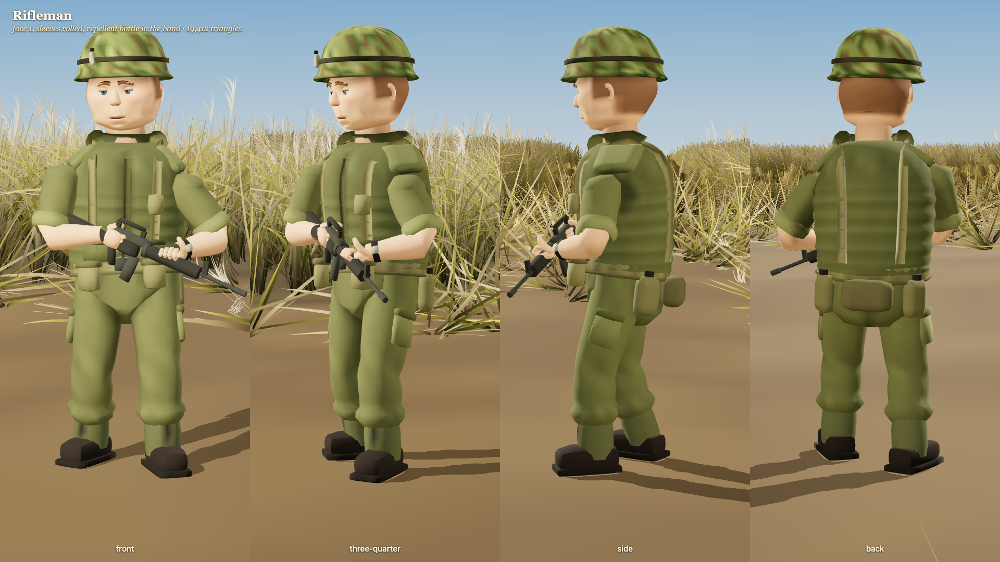
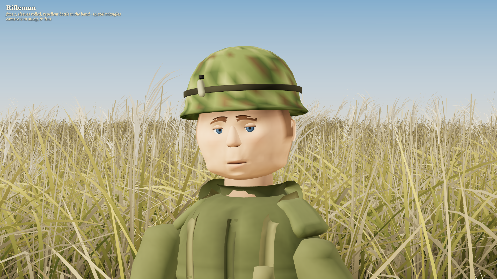
Approve, or note changes for Rifleman.
Riflemanface 3, darker skin, sleeves down, towel round the neck
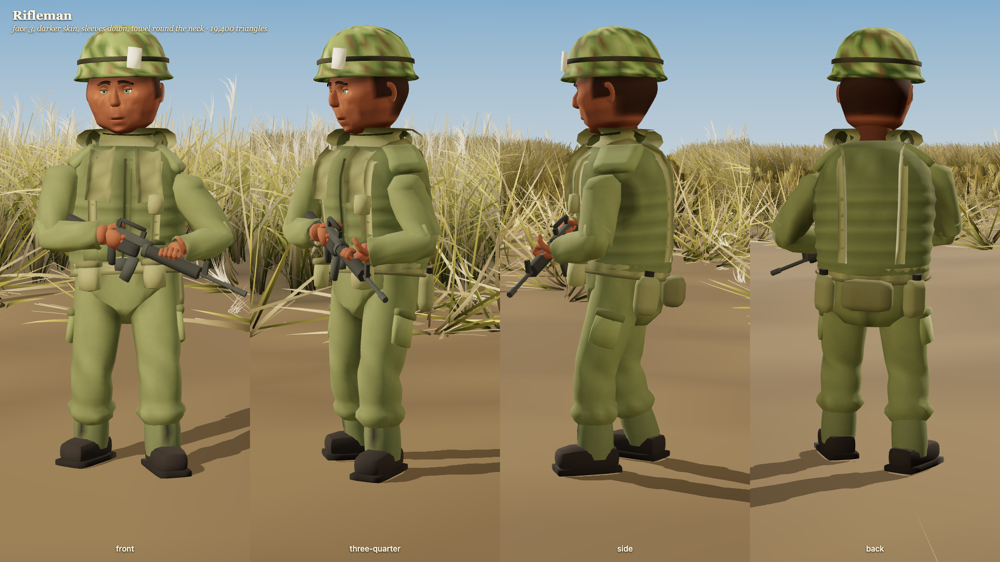
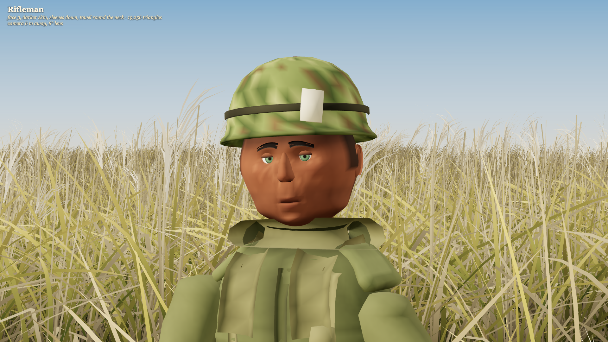
Approve, or note changes for Rifleman.
Captain Himmerno rifle; map in hand, pistol belt, map case
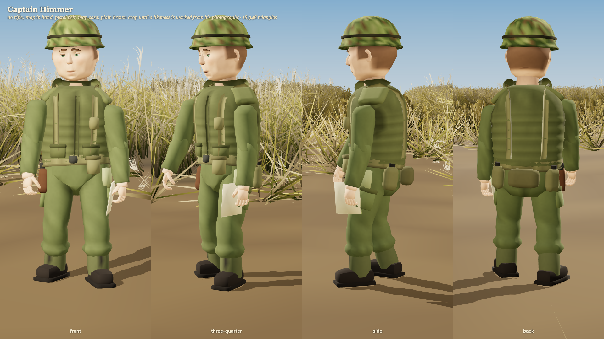
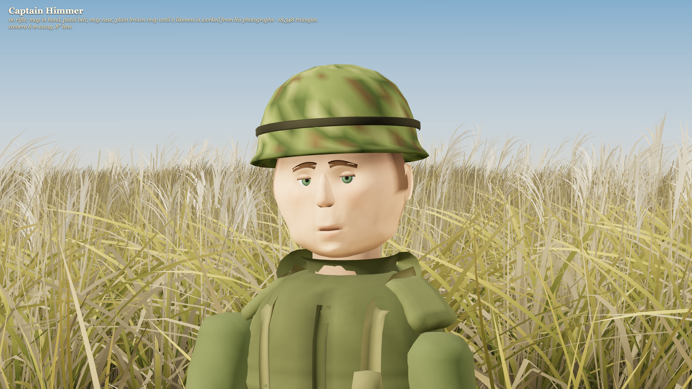
Approve, or note changes for Captain Himmer.
RadiomanPRC-25 on his back, whip antenna, handset
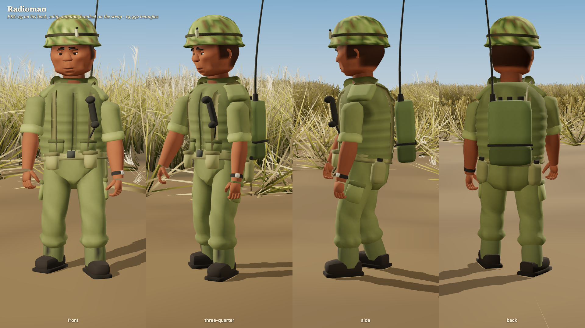
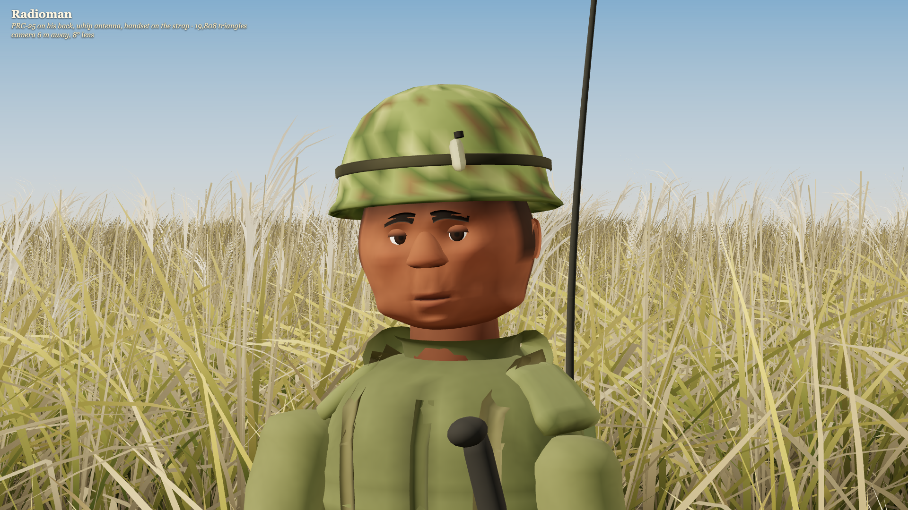
Approve, or note changes for Radioman.
Corpsmantwo aid bags, pistol belt, no rifle
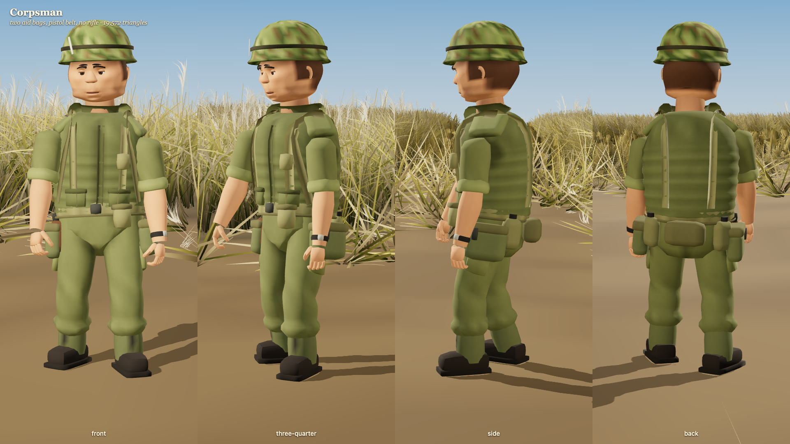
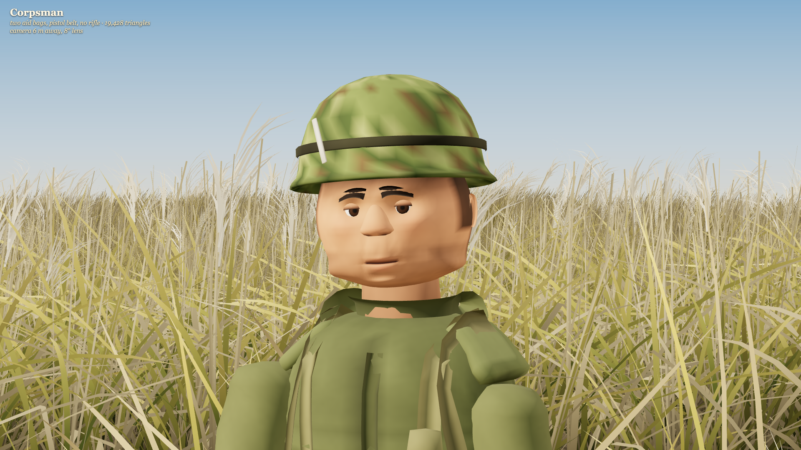
Approve, or note changes for Corpsman.
NVA soldiersteel helmet with net, chest rig, AK-47
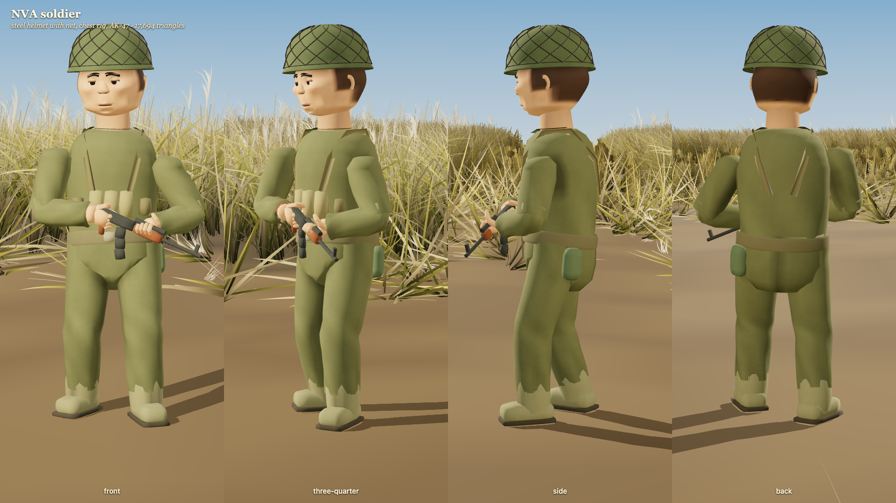
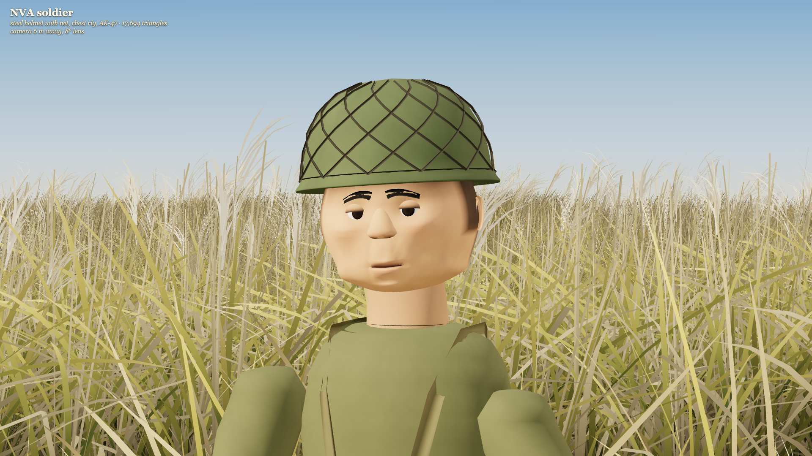
Approve, or note changes for NVA soldier.
Twelve riflemenone function, twelve seeds: face, skin, height, build, stubble, sleeves, towel, helmet band
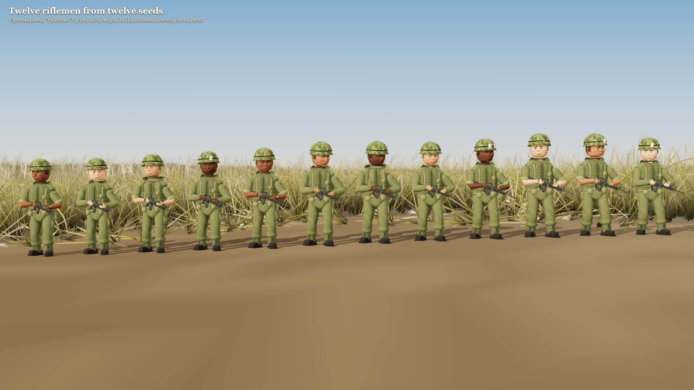